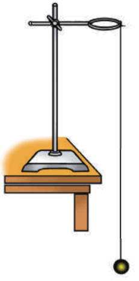
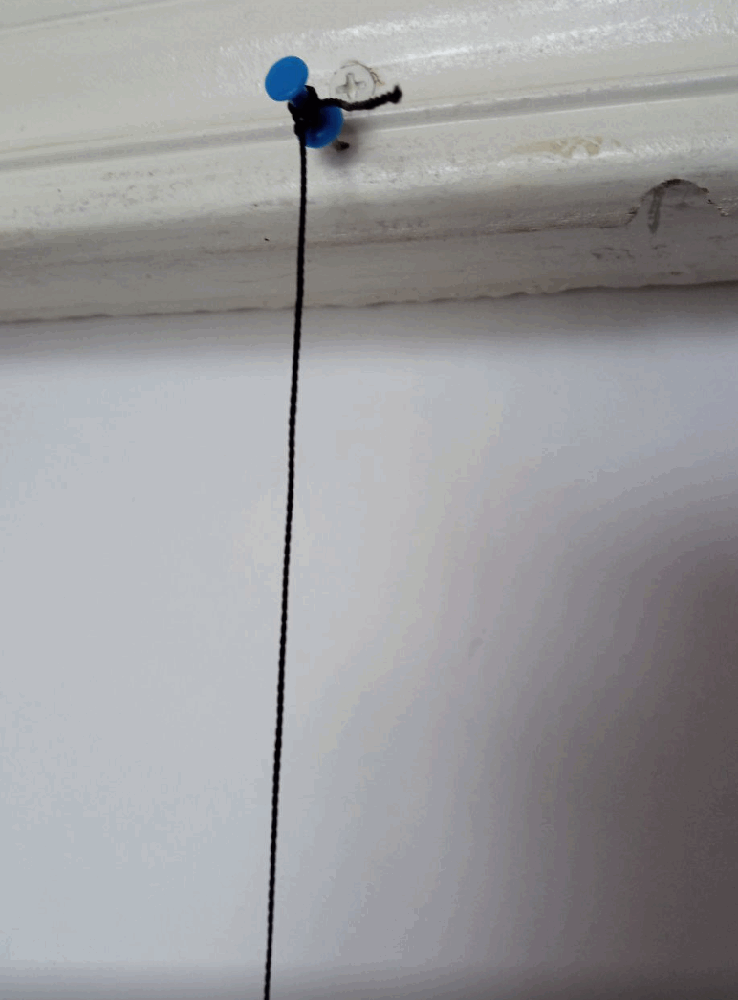
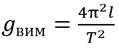
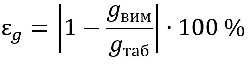
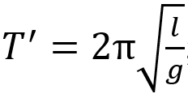
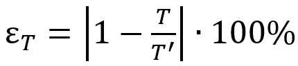

Дослідження коливань нитяного маятника, вимірювання прискорення вільного падіння
Мета: виготовити нитяний маятник, визначити за його допомогою прискорення вільного падіння; переконатися в справедливості формули Гюйґенса.
Обладнання: штатив із муфтою та лапкою, металева кулька (або тягарець) із петелькою, нитка завдовжки 1,5–2 м, вимірювальна стрічка, секундомір.
Впишіть ваш клас
Впишіть ваше прізвище та ім'я
Підготовка до експерименту
Виготовте маятник (див. рисунок). Нитка маятника має бути досить довгою – кулька повинна майже торкатися підлоги.
Замість підвішування до штативу, ви можете прив'язати нитку у проємі дверей тощо.


Експеримент
Суворо дотримуйтесь інструкції з безпеки.
Результати вимірювань і обчислень відразу заносьте до таблиці.
1. Виміряйте довжину маятника (відстань від точки підвісу до центра кульки).
2. Відхиліть маятник від положення рівноваги на 5–8 см і відпустіть.
3. Виміряйте інтервал часу, за який маятник здійснює 20 коливань.
4. Повторіть дослід ще тричі, останнього разу (дослід 4) зменшивши довжину маятника вдвічі.
Цілу частину числа від дробової відокремлюйте крапкою або комою (один з варіантів спрацює)
№
Довжина нитки l, м
Кількість коливань N
Час коливань
Період коливань T, с
t, c
tсер, c
1
2
3
4
Опрацювання результатів експерименту
Частина 1. Вимірювання прискорення вільного падіння
1. За даними дослідів 1–3 визначте:
1) середній час 20 коливань: tсер = (t1 + t2 + t3 ) / 3
2) період коливань маятника: T = tсер / N
3) прискорення вільного падіння:

2. Оцініть відносну похибку експерименту,
порівнявши значення прискорення вільного падіння,
отриманого в ході експерименту (gвим ), із табличним значенням (gтаб = 9,8 м⁄с2 ), за формулою:

Частина 2. Перевірка формули Гюйґенса
1. Для досліду 4 обчисліть період коливань маятника у два способи:
1) скориставшись означенням періоду: T = t / N
2) скориставшись формулою Гюйґенса (вважайте, що g = 9,8 м/с2):

2. Оцініть відносну похибку експерименту:

Аналіз експерименту та його результатів
Проаналізуйте експеримент і його результати. У висновку зазначте:
1) величини, які ви вимірювали;
2) чи залежать значення цих величин від довжини нитки (якщо залежать, то як);